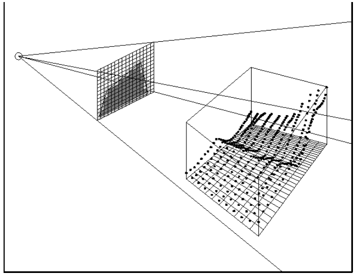

# Lumen
Lumen 是各种 GI 技术的整合，可以简单概括成 SDF (Mesh 距离场 + 全局距离场) + “体素”（Surface Cache） + SSGI （屏幕空间追踪）+ RSM (Reflective Shadow Map) + 硬件光追（lumen 补充）
SDF (Mesh 距离场 + 全局距离场): 软光追加速结构，其中 Mesh 距离场在 UE4 里已被用于 DFAO，而全局距离场是一张合并了相附近所有 Mesh 距离场的 texture，为了避免遍历每个网格距离场的一种 “低配” 方案；这俩正好对应项目设置里的两种追踪模式：Detail Tracing 和 Global Tracing
Detail Tracing ：前两米内的追踪使用 Mesh 距离场，其余范围使用 Global Tracing
Global Tracing：只追全局距离场，这种性能当然更省，质量也低一些
Surface Cache： 软光追直接和间接光的容器，类似于体素，Nanite 网格会加速捕获
SSGI：屏幕空间追踪，这个就不说了，UE4 就在用，lumen 里作为软光追的补充
RSM（反射阴影贴图）：Surface Cache 只覆盖相机 200m 范围，解决快速移动时软光追的间接光跟不上，此时只有屏幕追踪的情况
硬件光追：也是作为 lumen 里软光追的补充，Nanite 网格需要设置 Proxy Triangle Percent 生成代理 Mesh，再用代理 Mesh 做硬件光追
** ⼀个 MeshCard 就是⼀个⻓宽⾼不等的且只有⼀个坐标轴朝向 Orientation ∈ [-x,+x,-y,+y,-z,+z] 的六⾯体。** 从形状上来说，它就是⽅块形的积⽊，这些捕捉位置被称为 Cards，是逐网格被离线生成的
通过控制台参数 r.Lumen.Visualize.CardPlacement 1 可以查看 Lumen Cards 的可视化效果

它的核心思想和步骤在于将网格离散化成大小相等的 3D 体素，然后根据分辨率大小从摄像机位置向每个像素位置发射一条光线和 3D 体素相交测试，从而渲染出高度场的轮廓。而高度场的轮廓将屏幕划分为高度场覆盖区域和高度场以上区域的分界线

# Lumen 在运⾏时有四个主要⼯作来完成最终的 GI 计算：
- 更新 LumenScene（LumenScene 即为 Lumen 在计算过程中所使⽤的场景，它不同于渲染时的 FScene 结构，它是 FScene 的⼀个不完整的简化版本）
- 注入直接和间接 Diffuse 光照到光照缓存中 (包括 MeshCards 和基于 3D Clipmap 的 Voxel 等)。根据 Lumen 场景的 Card 信息，追踪并更新对应的纹素（Texel）。
- 基于当前屏幕空间⾃动化放置 Probe 及 Trace 得到 Probe 的光照信息，对 Probe 的光照信息进⾏⼆次编码及⽣成 Irradniance Cahe
- 使⽤ Probe 的光照信息、⼆次编码的光照信息及 Irradiance Cache 信息计算最终 Indirect DIffuse 和 Indirect Reflection，并混合 History 光照信息做为最终的 GI 输出
# 更新 LumenScene
- 新 Primitive 加入场景，多 Instance 如 ISM 等会进⾏ LumenCard 合并 --> 新的 MeshCards ，DF 加入
- LumenScene 已有 Primitive 从场景中被卸掉 --> Dirty MeshCards ,DF 被从 LumenScene 移除
- Primitive 有更新 --> 更新 MeshCards ,DF 的 Transform/Lod 等数据
- 为 MeshCards 分配和更新其在材质、光照信息等 AtlasTexture 中的位置和⼤⼩
- 把近处未捕获过材质参数的 MeshCards 加入渲染列表 (默认的近处指的是离相机 200 米内的所有 MeshCards，且要求 MeshCards 的包围盒⼤于给定阈值，也限制了每帧渲染的 MeshCards 不超过给定数量，在此做了分帧处理)

Cache 近处 MeshCards 对应静态模型的渲染指令 (DrawCommands) 和 Nanite 的渲染列表，⽤于捕获材质属性 (MateialAttributes)，其中静态模型使⽤最⼤的 Lod Level ⽤于节省材质捕获的开销 LumenScene 中把场景划分为远景和近景两部分，故除 Primitive 外，场景中的相机移动也会触发 LumenScene 更新
捕获 MeshCards 的材质属性 (MaterialAttributes)
- Material Albdo ，⽤于⽀持 Diffuse Lighting 的计算
- Material Emissive ，⽤于⽀持⾃发光照亮场景
- Material Opacity , ⽤于处理光线穿过和在半透物体上的半弹
- Normal , ⽤于光照模型计算各类光照
- DepthStencil , 在 Lumen 后续的各个阶段均有应⽤，如⽤于计算放置 Probe 点，⽤于计算光照插值权重等
每个 MeshCards 当作一个 view，把 LumenScene 光栅化 (bound 里面的东西)，走 navite 流程，把 Basecolor、Normal、Emissions 分别写到他们的 Atlas (图集) 上

在完成材质属性捕获操作后，还会执⾏以下操作:
- 计算 Depth 的矩 (Moments) 并⽣成 Mipmap , ⽤于后续 Trace 时使⽤切比雪夫不等式估算 Occlusion，这⼀处理⽅式来源于 Variance Shadow Maps3，也在 DDGI4 中被⽤来处理 Irradiance Volume 的可⻅性。
- 预处理 Opacity 和⽣成 Mipmpa 链
注入光照到缓存 (Inject Lighting To Cache)
在完成 MeshCards 数据更新及材质属性捕获之后，下⼀步就是需要把当前场景中的光照信息注入到光照缓存中去。Lumen 使⽤了三种主要的数据结构来缓存场景中的光照信息，它们分别是 MeshCards 和其对应的 AtlasTexture (最⾼精度)、Voxel 3D Clipmap2 (中精度) 和 GI Volume（⽤于体渲染）。这三种类型的数据同时可以
覆盖场景中的静态物体、动态物体和体渲染的物体，可形成完成的 GI 照明来源

# Voxel Cone Tracing
VXGI
# 为 MeshCards 注入光照
从上⾯的流程图可知，MeshCards 的光照注入分为直接光和间接光两部分，且直接光和间接光也都只计算 Diffuse 贡献⽽不计算 & Specular 贡献。
第⼀步是先计算 MeshCards 的间接光，间接光的计算可以按光照源数据来源，Trace ⽅式两个维度进⾏拆分，Lumen 共⽀持 4 种不同的间接光计算模式，

Lumen 使⽤ VoxelLighting 做为间接光的来源并使⽤分块 Trace 复⽤来计算 MeshCard 的间接照明。
逐纹素采样⽣成的 Indirect Lighting 具有更⾼的精度，但需要更多的采样点从⽽性能更差，基于分块的 Trace 因为复⽤相邻纹素的采样结果，所以在⼤多数情况下可以使⽤更少的采样数量达到更平滑的采样结果
关于间接光的 Voxel Trace 部分的简要说明
- 使⽤ Global Distance Field 进⾏加速求交
- 使⽤的是 Voxel ConeTrace 采样 VoxelLighting, 默认的每个纹素采样 8 个 Cone，根据 Hit 距离确定使⽤哪⼀级 Mipmap
- 采样的 Cone 同时会采样天光 (如果天光开启) 叠加到 Lighting 结果中
第⼆步是对间接光的结果再次进⾏ Bilinear Filter 并过滤掉 < 0 的异常值
第三步是计算直接光照的贡献，Lumen ⽀持的直接光类型包括: PointLight 、SpotLight 、RectLight 和 DirectionalLight。除 DirectionalLight 是逐盏灯计算外外，其它三种类型的光照都是分批执⾏的 —— 因为它们光照范围有限，可以只把这⼀批次内影响的 MeshCards 找出来，每批次的直接光渲染只对在他们影响范围内的 MeshCards ⽣效。直接光计算的最后⼀个要点是：只计算 Diffuse 贡献项。
# 更新 VoxelLighting Mips，Voxel 光照注入
从上⾯ VoexlLighting 介绍⼀节可以看到它是⼀个以相机世界位置为中⼼点的 Voxel Clipmap, 这样在相机发⽣移动时，Clipmap 也同样需要进⾏更新。为减少单次需要更新的 Voxel 数量，有如下优化。
[1]. 保证每帧最多更新⼀级 Mips,Voxel Clipmap 四级 Mip 更新的的顺序如下如⽰:
a. 第 0 , 2 , 4 , 6 , 8 ,... 帧允许更新第 0 级 mip
b. 第 1 , 5 , 9 , 13 , 17 ,... 帧 允许更新第 1 级 mip
c. 第 3 , 11 , 19 , 27 , ... 帧 允许更新第 2 级 mip
d. 第 7 , 15 , 23 , 31 , ... 帧 允许更新第 3 级 mip
[2]. 在相机未发⽣剧烈移动时，理论上只需要更新移动⽅向上影响部分的 Voxel
除了相机更新，场景中的 Primitive 增删修改也会影响到它周围的 Voxel，所以这个策略实际上在 Lumen 的实作中采⽤的是更⼀般的 PrimitiveUpdateBounds 去和 Clipmap Tile Bound 求交，来确定真正需要更新的 Voxel 数量，更新的也不是 Voxel，⽽是接下来会介绍到的 VisibilityBuffer
VoxelLighting 光照解算过程使⽤ MeshDistanceField 来加速求交：Lumen 选择的是先使⽤当前 Voxel Clipmap 的 Boundbox 去剔除掉不在此范围内的所有 Objects 及其对应的 MeshDistanceField, 再使⽤这些通过剔除的 MeshDistanceField 包围盒来计算它们⾃⼰所覆盖了哪些 Voxel 并把⾃⼰的索引写入所有覆盖 Voxel 的 Trace 参数中，在接下来的 Voxel Trace Pass ⾥，每个 Voxel 仅需处理上⼀步所填入的 MeshDistanceFiled 即可。Voxel Trace Pass 的输出数据是包含 HitDistance 和 HitObjectIndex 组合的 VisibilityBuffer。VisibilityData
最后的 Voxel Shading Pass 则从压缩过的 VisibilityBuffer 中获取到最佳的三张 MeshCard 来⽤对 Voxel 解算光照，这⼉计算光照的权重系数不只使⽤ AmbientCube 的系数，同时考虑到物体的透明度和 MeshCard 的可⻅性。权重 Weight 的计算公式如下所⽰
1 | |
# 生成和计算 GIVolume
此处的 GIVolume 即为传统 Irradiance Volume，其默认覆盖离相机距离 80 米的世界 (z 轴)。实现要点如下：
- 光源来⾃于 VoxelLighting , 使⽤ ConeTrace 解决光照，
- 默认的每个 Volume 采样 16 个 Cone 使⽤ SH2 编码每个最终结果
- 除 VoxelLighting 外每个 ConeTrace 也会采样天光会混合历史光照数据，产⽣更平滑的变化
# ScreenSpace Probe 与 Indirect Lighting 解算
- 光源：把场景分为近景和远景，近景使⽤ VoxelLighting，远景使⽤ DistantMeshCard（相当于⼀个巨⼤的 AmbientCube)
- 光照计算：使⽤ PixelWorldPosition 和 PixelWorldNormal 获取最近且⽅向匹配的 3 个 Voxel 来解算当前 GI
- 效率： 可以使⽤半屏或更⼩分辨率的 GI RenderTarget
- 效果： 使⽤ spatial 和 temporal Filter 平滑光照，使⽤⼀些粗糙的⼿段处理漏光（比如 Normal offset, 限制墙体厚度，使⽤ stencil 标记室内外，使⽤ SDF 推采样点到物体外等等）
Lumen 是⼀个综合性的基于软件 Trace 的 GI ⽅案，它同时使用了 SSGI，Detail MeshCard Trace, VoxelLighting Trace，Distant Meshcard Trace 四种方式去求解最终光照，其中各种 Trace 的作用距离和优先性排列如下：
SSGI 的作用范围是全场景的，即只要 SSGI 可以 Trace 到 Hit 则使用 SSGI 的反弹信息
Detail MeshCard Trace 的作用起始范围在距离不超过 2 米，Trace 距离不超过离相机 40 米，和计算 VoexLighting 时⼀样的⽅式在采样 MeshCard 光照信息时会使⽤类似 VSM 的⽅式使⽤概率估算遮挡
VoxelLighting Trace 的作用范围只覆盖了离相机 200 米以内的像素范围，遮挡估算是基于 Cone 实施的
Distant MeshCard Trace 作用范围在 200~1000 米范围内，这个精度下遮挡估算已然⽆意义
半透物体的处理有⽣成 GI Volume (？未查证实现是否真引⽤ GIVolume)


很容易看到在室外场景中，主要是靠 VoxelLighting 照明的。
Lumen 选择的是使⽤当前帧屏幕像素所对应的世界位置来放置 Probe，并为之命名为 ScreenSpace Probe。Probe 采⽤八⾯体映射 (OctahedralMap) 6 存储，默认⼤⼩为 8*8。这既⽅便使⽤⼀张 2D 的 RenderTarget 来做为 Atlas Texture 存储所有的 Probe, 同时八⾯体映射⼜没有椭圆映射存在的边界接缝难以处理的问题。八⾯体映射从 2D 纹理到球⾯和半球的映射过程如下图所⽰，更详细的算法描述⻅：

有了 Probe 之后，Lumen 的 Indirect Diffuse 解算流程调整如下:

1.Downsample 屏幕⼤⼩到 1/16,1/16 + 1/32，其中 [1/16,1/16] 部分均均⽣成 Probe，剩下的 [1/16,1/32] 根据周围 probe 的空间信息来和⾃适应⽣成。其中 uniform placement ⼀个 pass 按 16 像素距离 + jitter 放置， adaptive placment 部分分两个 pass, 分别按 8 像素和 4 像素的距离进⾏迭代，查找需要放置 probe 的位置。adaptive placement 的算法可描述为:
1
2
3
4
5sample周围4个probe {sample_probe(uv) , uv|uv+ [(0,0),(1,0),(0,1),(1,1)]}
计算bilinear weight
获取这些probe和当前position的深度差和夹⾓, 计算depth weight& corner weight 叠加
biliner weight成finalWeight
如果所有 finalWeight< 0 ，说明周围没有有效的Probe可以采样，则放置⼀个新的probe使⽤ ConeTrace 采样 MeshCard 和 VoxelLighting 及 SSGI ⽣成 probe 的 radiance、对 probe 做 sptial filter 和修复边界上的采样点，转⼀份 probe 到基于 SH 的数据但并不清理掉原始的 probe 数据，这样，probe 实际上存在两份 radiance 数据 ——octahedral map + sh 双料存储
upsample probe 到屏幕⼤⼩，temporal blend Indirect Diffuse。upsample 有两个主要分⽀:
- 对于非 hair stand 的像素使⽤第 2 步中⽣成的 Probe SH, 使⽤ adaptive palcement 相同的权重进⾏ SH 混合计算最终光照
- 对于 hair 会使⽤ brdf importance sample weight, 采样 Probe cotahedral map 进⾏混合计算最终光照
如果不使⽤ rtx reflection, 同⼀个 pass 中还会进⾏ indirect specular 的解算，最后把 indirect diffuse 和上⼀帧的 indirect diffuse 进⾏混合，做为最终 indirect diffuse 输出。这样就完成整个 Lumen GI 的计算⼯作。可以看到的是 Lumen 在整个流程中没有像 RTX ⼀样，依赖很重的时频域 Filter 来压像素间的⽅差。


# Lumen 总结
# Lumen 的⽆限反弹是如何实现的？
Meshcard 采样的 VoxelLighting 是上⼀帧的数据，这样 MeshCards 反弹数据会从第⼆帧开始累积，每帧都会多⼀次反弹。
剖析虚幻渲染体系（06）- UE5 特辑 Part 2（Lumen 和其它）